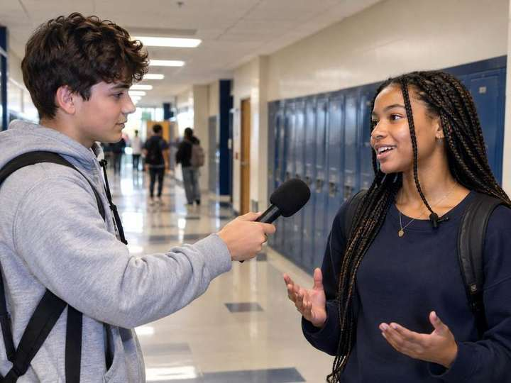
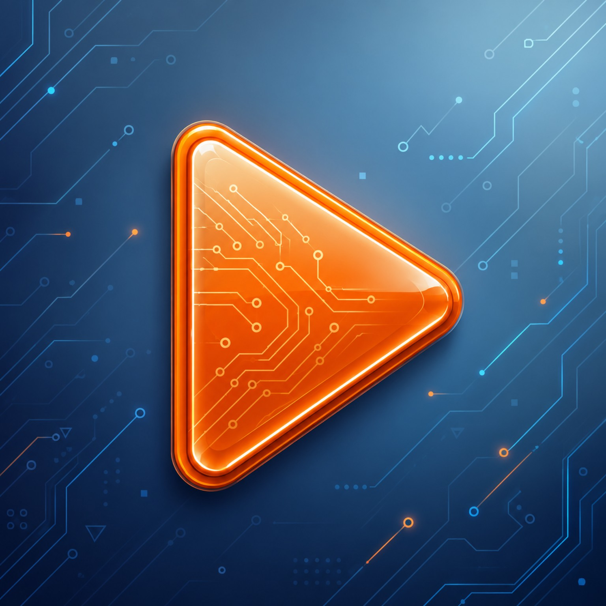
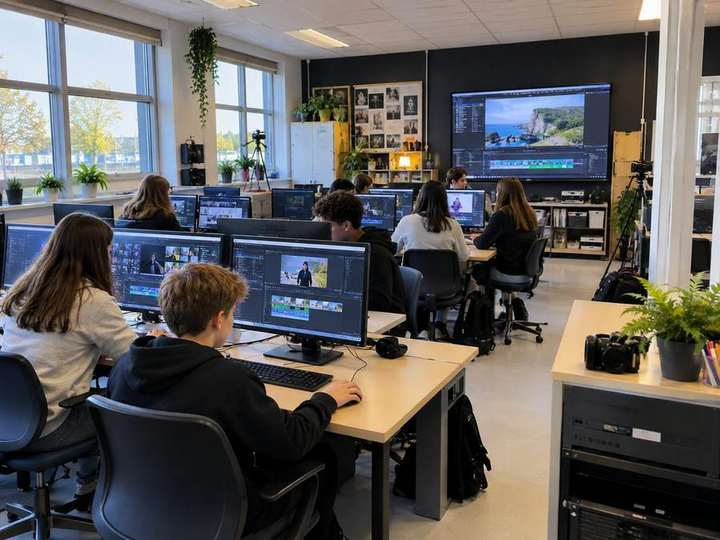
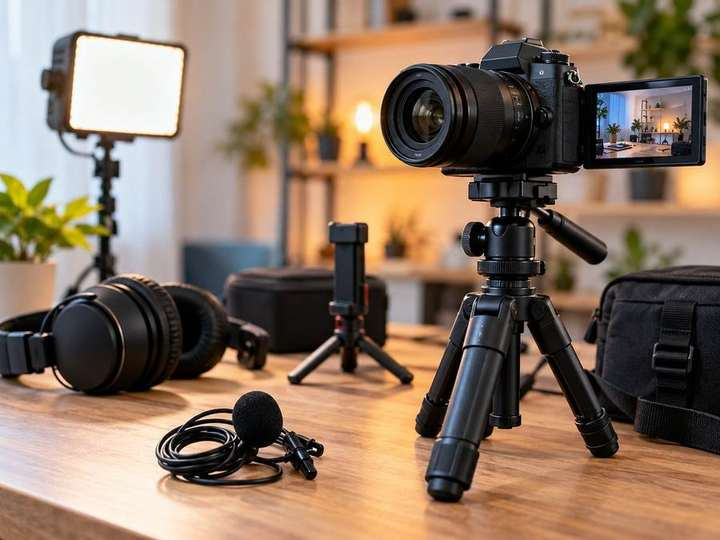
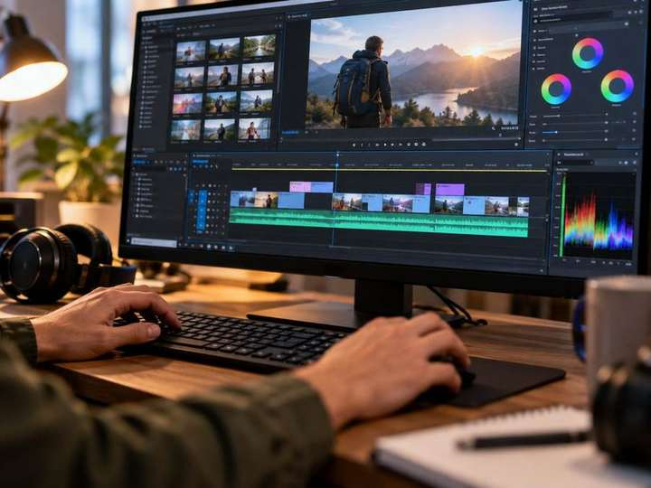
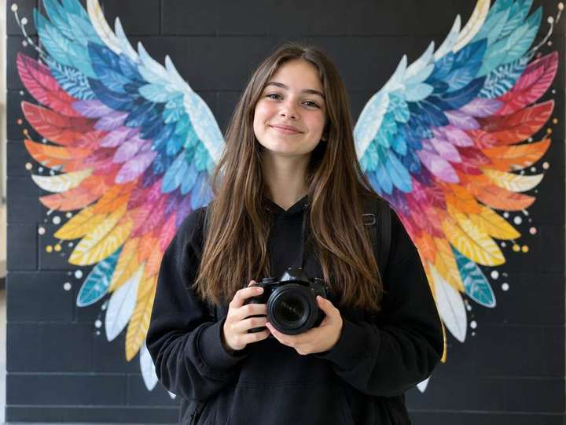
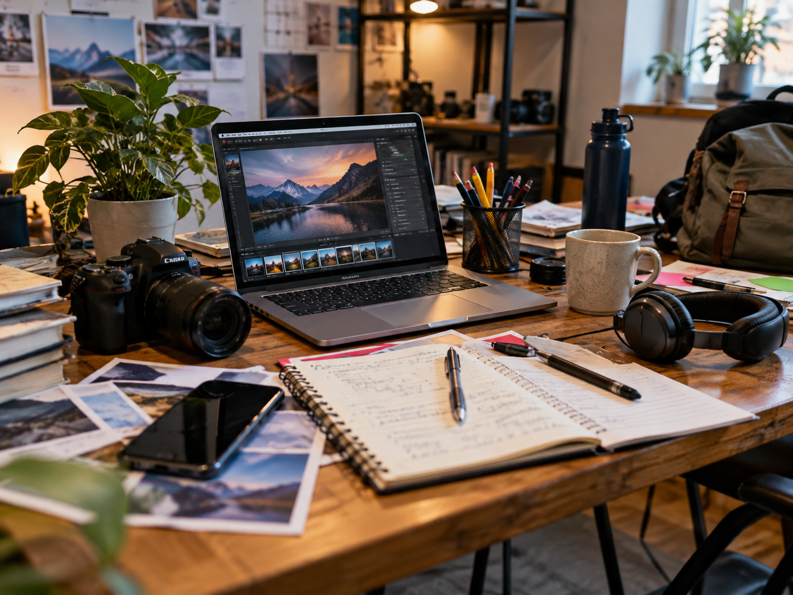
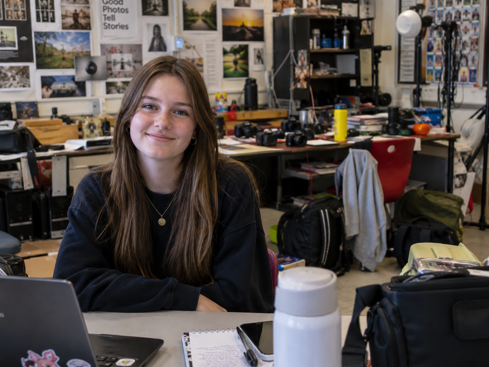
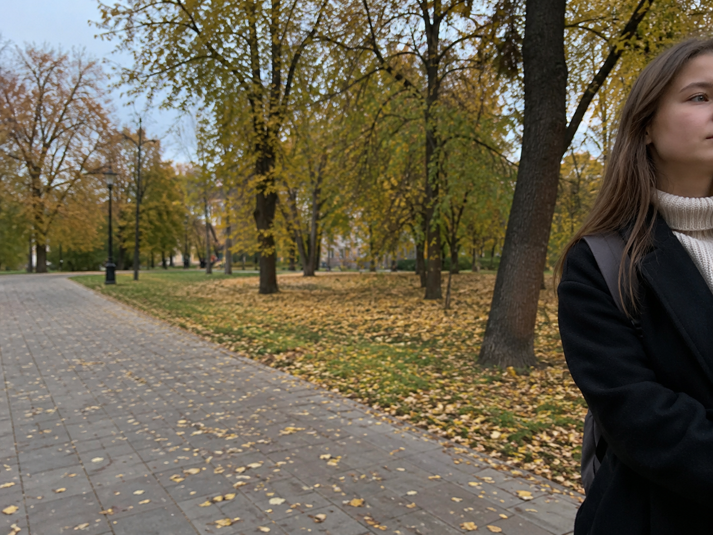
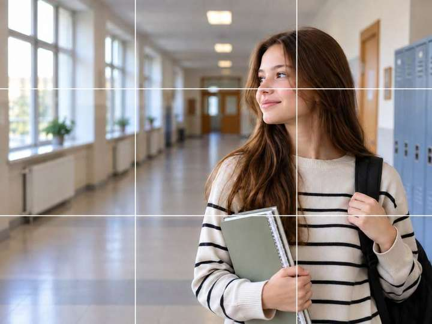

1

Сегодня работаем как фотографы медиаредакции: решаем задачу кадра, убираем лишнее и учимся управлять вниманием зрителя.
Нажимай на пункт, когда он готов.
У каждой фотографии есть задача. Подбери к каждому кадру подходящую задачу.





Сначала просто посмотри на фотографии. Что здесь мешает? Потом сравни со объяснением.

В кадре одновременно много заметных предметов. Глаз перескакивает с ноутбука на камеру, кружку, телефон, блокнот и наушники — непонятно, ради чего сделана фотография.
Что сделать?Выбрать один главный объект. Остальное убрать из кадра, отодвинуть или сделать менее заметным.

С человеком всё в порядке, но за ним слишком много деталей: камеры, сумки, провода, бутылки, стулья. Они отвлекают от героя.
Что сделать?Перед съёмкой посмотреть за спину героя и по краям кадра. Иногда достаточно выбрать более спокойный участок стены или немного сместиться.

Человек почти выпал из кадра: справа обрезана фигура, а слева осталось слишком много пустого пространства.
Что сделать?Не обязательно двигать героя. Фотографу можно самому сделать шаг влево, вправо, ближе или дальше и заново построить кадр.
Настоящая задача редакции: сделать красивую предметную фотографию, которая потом станет основой цифровой открытки.
Листья, веточки, небольшие природные детали.
Книга, блокнот, ручка, карандаши, очки.
Цветы, небольшая открытка, красивая поделка или декор.
Сетка камеры делит кадр на девять частей. Она помогает увидеть, где герою будет «удобно» внутри фотографии.
Человек смотрит в свободную часть кадра. Фотография выглядит спокойнее.
Перед лицом мало места, а за спиной остаётся большое пустое пространство.

Героя можно расположить ближе к одной из вертикальных линий, а глаза — около верхней горизонтальной.
Да. Если фон симметричный — например, большие крылья — центральная композиция может быть сильнее.
Потом поверните человека в сторону и проверьте: осталось ли пространство перед взглядом? Сравните кадры и выберите лучший именно для этой локации.
Камера охотится на вас. Я снимаю видео и поворачиваюсь с камерой, а ваша задача — двигаться так, чтобы не оказаться в кадре.
Меняй направление и следи, куда направлена камера.
Используй людей и пространство вокруг, но не мешай другим.
После игры остановим видео в случайных местах и посмотрим, какие композиции получились сами собой.
Открываем несколько своих кадров на проекторе и проверяем их по одному и тому же алгоритму.
Возьми лучшую предметную фотографию и преврати её в готовую цифровую открытку ко Дню учителя.
Готовую открытку отправь в общий чат «Крыльев».